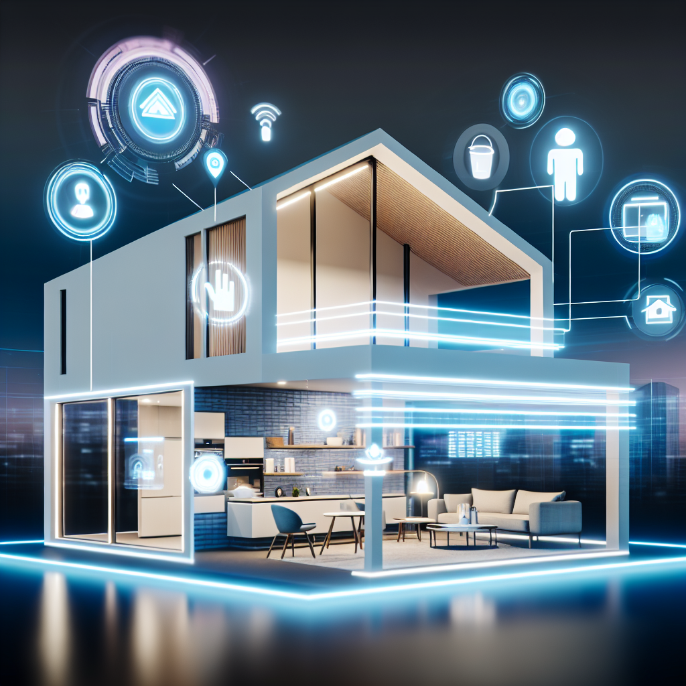
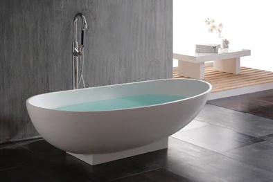

<!DOCTYPE html>
<html lang="en">
    <head>
        <title>Homes Starting a New Beginning</title>
        <link rel="stylesheet" href="styles.css">
    </head>
</html>

    <section class="title">

<H1>Homes Starting a New Beginning</H1> 

</section>


<nav class="navbar"></nav>
    <ul>
    <li><a href="/Figma.home.Html/">Home</a>
    <li><a href="Interior.html/">Interior</a>
    <li><a href="Technology features.html">Technology features</a>

        <section class="row"></section>

        <section class="center">
            
        </section>
        
        <section class="row"></section>

<section class="room">
    

        
        
        
         
        
        
</section>

<section class="Interior">

<p>AI clocks, or smart clocks, offer 
<br>more than just telling time. 
<br>They can integrate with your smart 
<br>home devices, control lighting, and 
<br>play music or podcasts. 
<br>Many come with voice assistants, 
<br>allowing you to set reminders, ask 
<br>questions, and manage your 
<br>schedule hands-free.</p>

<p>A weather box is a handy device 
<br>or app that provides real-time 
<br>weather updates and forecasts. 
<br>It can display temperature, 
<br>humidity, wind speed, and more, 
<br>helping you plan your day 
<br>effectively. </p>

<p>A breakfast stove AI is a smart 
<br>cooking appliance designed to 
<br>streamline your morning routine. 
<br>It can help you prepare a variety 
<br>of breakfast items, from eggs to 
<br>pancakes, using voice commands 
<br>or an app.</p>

<p>AI-powered garage doors enhance 
<br>security and convenience for 
<br>homeowners. These smart garage 
<br>door systems can be controlled 
<br>remotely via smartphone apps, 
<br>allowing you to open or close 
<br>the door from anywhere.</p>


<p>AI-enhanced patio tables can 
<br>transform your outdoor space 
<br>into a smart gathering hub. 
<br>They could also change from a 
<br>patio table to a game table.</p>

<p>Bed warmers are cozy devices 
<br>designed to provide gentle 
<br>warmth to your bedding, 
<br>ensuring a comfortable sleeping 
<br>environment, especially during 
<br>colder months.</p>

</section>

<section class="row"></section>

<section>
   <h2>The backstory of nice homes often reflects 
    a blend of personal dreams, architectural 
    styles, and historical context. Many beautiful
     homes are born from a desire for comfort, functionality, 
    and aesthetic appeal, often influenced by the owners’ 
    lifestyles and values.</h2>


</section>

<section class="row"></section>

<section class="Bath">




</section>

<section class="row"></section>

<section class="Bath">

<p>A nice bathtub can transform your bathroom into a 
<br>spa-like retreat, providing a perfect spot for 
<br>relaxation and self-care.</p>

<p>The new sprinklers are definitely a game changer! 
<br>They offer improved efficiency, allowing for better 
<br>water distribution and coverage. Many of them come 
<br>with smart technology, like sensors that adjust 
<br>watering based on weather conditions, which helps 
<br>conserve water and ensures your lawn gets just the 
<br>right amount.</p>


</section>

<section class="row"></section>

<h4>Here are some interesting facts about nice houses that highlight their features, design, and impact:
Architectural Styles: Nice houses can reflect various architectural styles, including Colonial, Craftsman, Modern, Mediterranean, and Victorian, each with unique characteristics and historical significance.
Energy Efficiency: Many modern homes incorporate energy-efficient features, such as solar panels, high-quality insulation, and smart thermostats, which can significantly reduce utility bills.
Open Floor Plans: Popular in contemporary design, open floor plans promote a sense of space and encourage social interaction, making homes feel more inviting and connected.
Smart Home Technology: A growing number of nice homes come equipped with smart technology, allowing homeowners to control lighting, security, heating, and appliances remotely for convenience and energy savings.
Outdoor Living Spaces: Many upscale homes emphasize outdoor living with features like patios, decks, and landscaped gardens, creating inviting spaces for relaxation and entertainment.
Quality Materials: High-end homes often use premium materials such as natural stone, hardwood flooring, and custom cabinetry, enhancing both aesthetics and durability.
Home Value: Nice houses typically appreciate in value over time, making them a sound investment. Factors such as location, design, and market trends play a crucial role in their resale value.
Curb Appeal: First impressions matter! Nice houses often have well-maintained exteriors, landscaping, and architectural details that contribute to their overall charm and attractiveness.
Personalization: Many homeowners personalize their spaces with unique decor, art, and furniture, making their homes a true reflection of their tastes and lifestyles.
Sustainability: An increasing number of homeowners are prioritizing sustainable building practices and materials, leading to eco-friendly designs that minimize environmental impact.</H4>

